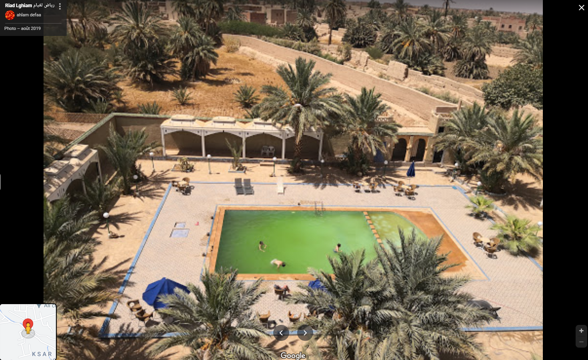
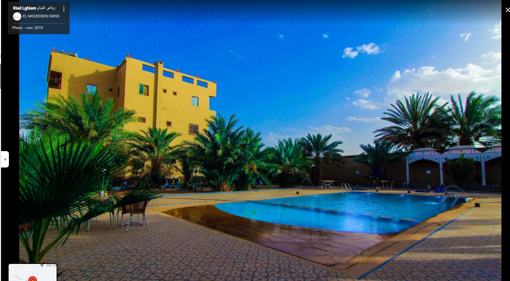
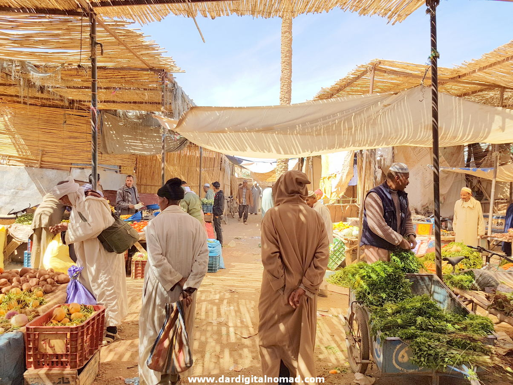
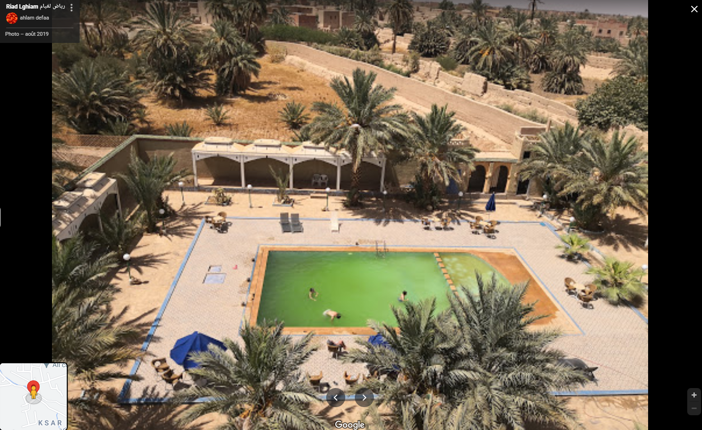
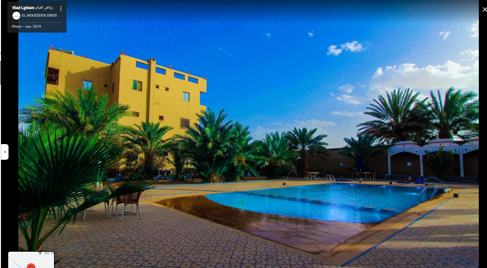
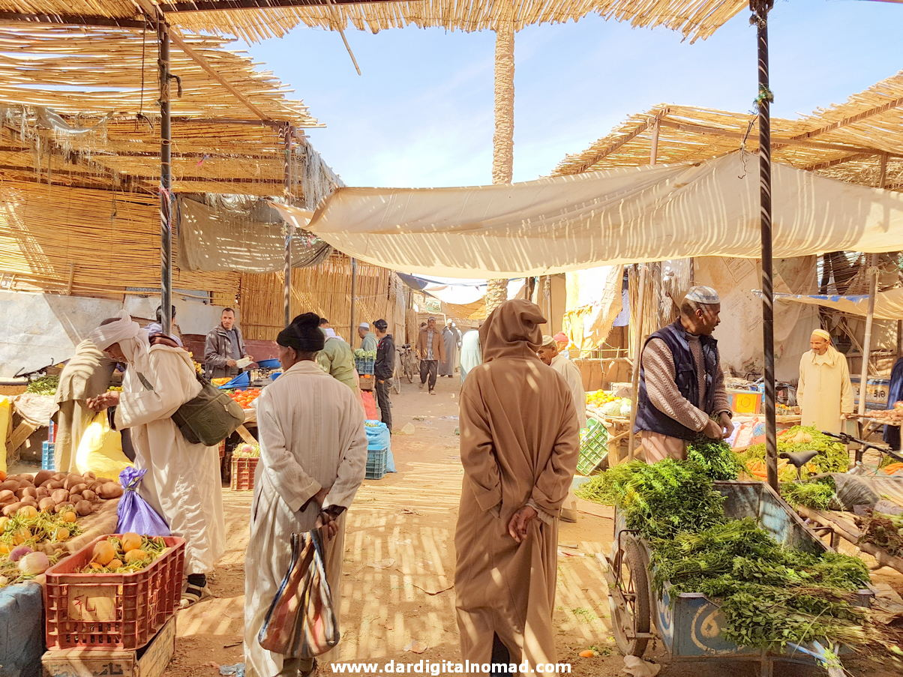

In the southern part of the town, Moulay Ali Cherif’s mausoleum is located with is a prime attraction for the tourists. He was the founder of the Moroccan Alaouite Dynasty. Rissani was earlier a widely known caravan center and is still a commercial hub of the region. The Rissani souk is visited by tourists and locals alike and is always crowded.
Here are the best hotels in Rissani :
Kasbah Hotel Ziz Palace
Address : National Road no 13Phone number : +212535774704
Kasbah Panorama Oasis, Tahesnounte
Address : TahesnountePhone number : +212667859793
Dar Haroun
Address : 31.30076,-417188 Haroun، Rissani 52450Phone number : +212626350107
Riad Lghiam
Address : Near Ksar Lamrani et de Moulay Ali Cherif،Phone number : +33666695916
Kasbah Ennasra
Address : 167 Ksar, RissaniPhone number : +212535774403
Guest House Arinas
Address : Close to Dar HarounPhone number : +212536606901
Moulay Ali Cherif Mausoleum
The Moulay Ali Cherif Mausoleum is the museum of the Alouite Dynasty founder. People who are fond of artisan craftsmanship and architecture will be able to enjoy the museum. Here you can know about the history of the dynasty as well as Moroccan history.
Sahara Gallery
The Sahara Gallery in Rissani is heaven for antique lovers. Not only is it a place where you can view thousands of antiques, but you can also buy from the shop. The owners of the gallery are very hospitable and can also provide you with a proper tour of the gallery.
Rissani Market
The Rissani market or souk is one of the biggest in the Tafilalet region. This souk is especially busy on Sunday, Thursday, and Tuesday. Traders from far away regions come to the souk to sell their goods. Here you will always find a good number of people even on the other days of the week.
Ranging from vegetables, dates, animals, spices, crafts, and household goods, there is nothing that you will not find in this souk. The traders can sometimes call you over in their shop to show you their goods or even to taste the famous Moroccan tea. Enjoy their hospitality, but be aware while doing so.
 





Ksar El Fida

Ksar Oulad Abdelhalim

Ksar Tinheras